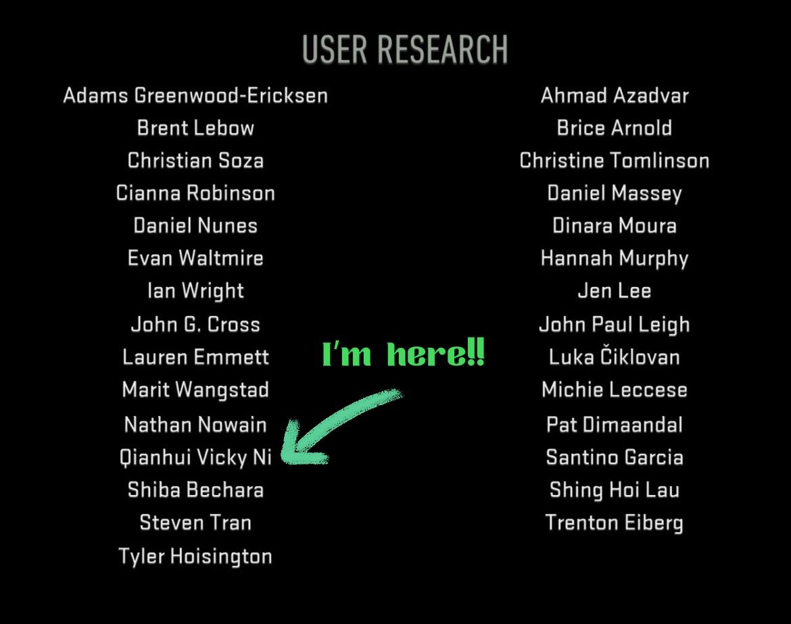
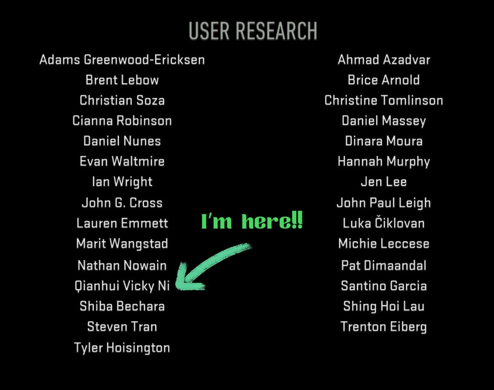

Me as a game user researcher...
Outside of school, I am enthusiastic about video games, especially RPGs (e.g., Gujian 3, Assassin's Creed series, A Plague Tale series) and mobile MOBAs (played 1,000+ matches in Wild Rift). I am also a game photographer who travels around and takes photos in games. I would love to apply my research skills in this field and contribute to creating great gameplay experience.
I am interested in the following aspects of gaming experience:
- The use of visual aids to in-game navigaion
- Eye-tracking technique in game user research
- Player's perceptual of video game characters and story immersion
Game User Research Experiences
User Research Intern | Activision
May 2022 - Aug 2022
- Assisted with in-lab playtests (e.g., participant intake/outtake, station management, and trouble-shooting) for Call of Duty: Modern Warfare II, Call of Duty: Warzone Mobile, and Crash Team Rumble
- Moderated 1-on-1 usability testings with participants on PC, console, and mobile platforms
- Conducted qualitative and quantitative analyses on player responses and behaviors, and assisted with writing reports in a variety of length and detail formats
- Conducted and presented an individual project on using the eye-tracking technique in analyzing the usability of game menus and in-game navigation experience
 
